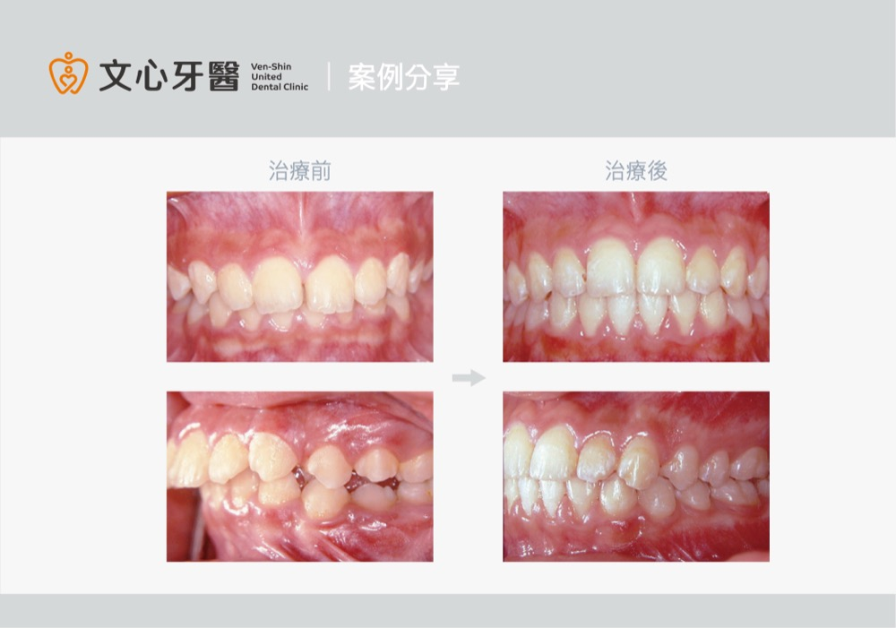
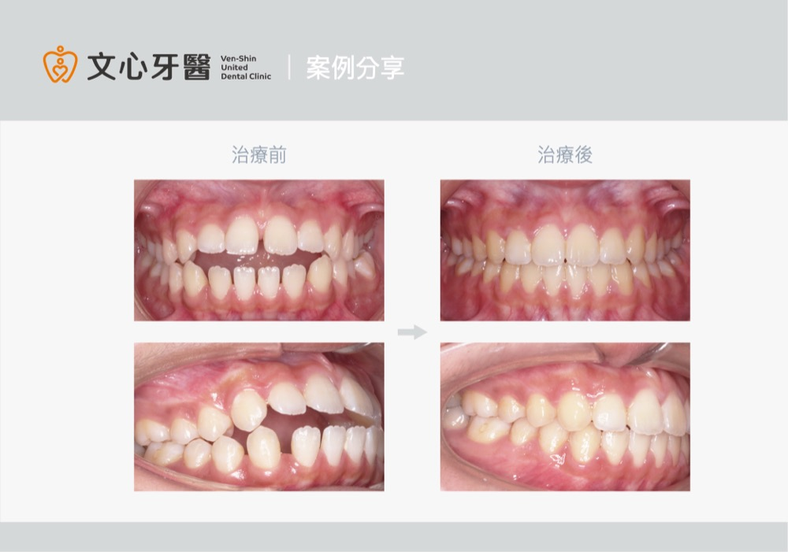
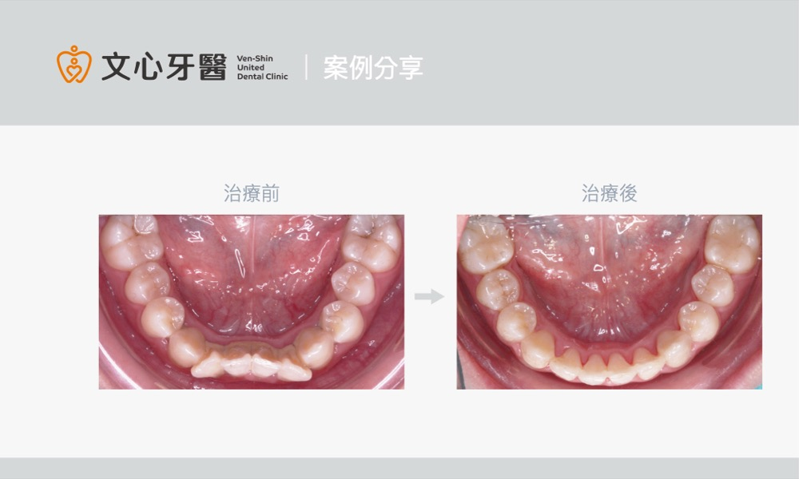

牙齒知識
醫師專欄
醫師專欄共 202 篇。

再談側臉美觀線(E線)
矯正如何改變E線?E線的極限在哪? 下次照鏡子時，試著用指尖比出鼻尖到下巴的線，看看你的嘴唇有沒有「犯規」喔！相關問題歡迎諮詢矯…
閱讀全文
什麼是側臉美觀線(E線)?
為什麼E線重要? E線的完美標準是什麼? 實際案例說明讓您更了解側臉美觀線!相關問題歡迎諮詢矯正，幫助您在矯正前有更完整的了解。
閱讀全文
我的小孩有小下巴嗎?
爸爸媽媽看過來！什麼是小下巴? 為什麼會有小下巴? 小下巴會有什麼影響? 小下巴黃金治療期為青春期前(約10-14歲)
閱讀全文
我有深咬嗎?深咬會有什麼影響?
照照鏡子看看自己有沒有深咬?當上顎前牙蓋住下顎前牙超過1/2，就可以請齒顎矯正專科醫師來判斷是否為深咬喔!
閱讀全文
什麼習慣會造成牙齒開咬?
別讓小孩的不良口腔習慣造成牙齒開咬!什麼習慣會造成開咬?為什麼不良的口腔習慣會造成開咬?家長可以怎麼做呢?
閱讀全文
為什麼會齒列擁擠呢?
齒列擁擠只能拔牙矯正嗎?如何以不拔牙來創造牙齒的空間?相關問題歡迎諮詢，幫助您在矯正前有更完整的了解。
閱讀全文人工植牙前評估 馬虎不得急不得
文心牙醫位於台南市南區，提供牙齒矯正、隱形矯正、人工植牙、全口重建及一般牙科服務。查看醫師團隊、診療項目與交通資訊，並可透過電話…
閱讀全文做活動假牙是否有年齡限制 ?
文心牙醫位於台南市南區，提供牙齒矯正、隱形矯正、人工植牙、全口重建及一般牙科服務。查看醫師團隊、診療項目與交通資訊，並可透過電話…
閱讀全文拔牙時記得多保留骨頭
文心牙醫位於台南市南區，提供牙齒矯正、隱形矯正、人工植牙、全口重建及一般牙科服務。查看醫師團隊、診療項目與交通資訊，並可透過電話…
閱讀全文全瓷冠成就假牙自然之美
文心牙醫位於台南市南區，提供牙齒矯正、隱形矯正、人工植牙、全口重建及一般牙科服務。查看醫師團隊、診療項目與交通資訊，並可透過電話…
閱讀全文年紀大了還需要做牙齒矯正嗎 ?
文心牙醫位於台南市南區，提供牙齒矯正、隱形矯正、人工植牙、全口重建及一般牙科服務。查看醫師團隊、診療項目與交通資訊，並可透過電話…
閱讀全文矯正治療搭配牙冠增長術來保牙
文心牙醫位於台南市南區，提供牙齒矯正、隱形矯正、人工植牙、全口重建及一般牙科服務。查看醫師團隊、診療項目與交通資訊，並可透過電話…
閱讀全文活動假牙不宜一補再補
文心牙醫位於台南市南區，提供牙齒矯正、隱形矯正、人工植牙、全口重建及一般牙科服務。查看醫師團隊、診療項目與交通資訊，並可透過電話…
閱讀全文抽完神經記得裝牙套
文心牙醫位於台南市南區，提供牙齒矯正、隱形矯正、人工植牙、全口重建及一般牙科服務。查看醫師團隊、診療項目與交通資訊，並可透過電話…
閱讀全文牙齒排列整齊 口腔環境更健康
文心牙醫位於台南市南區，提供牙齒矯正、隱形矯正、人工植牙、全口重建及一般牙科服務。查看醫師團隊、診療項目與交通資訊，並可透過電話…
閱讀全文拔牙 患者不怕醫師怕怕
文心牙醫位於台南市南區，提供牙齒矯正、隱形矯正、人工植牙、全口重建及一般牙科服務。查看醫師團隊、診療項目與交通資訊，並可透過電話…
閱讀全文拔牙前宜與醫師多加討論
文心牙醫位於台南市南區，提供牙齒矯正、隱形矯正、人工植牙、全口重建及一般牙科服務。查看醫師團隊、診療項目與交通資訊，並可透過電話…
閱讀全文乳牙排列 影響未來是否需要牙齒矯正?
文心牙醫位於台南市南區，提供牙齒矯正、隱形矯正、人工植牙、全口重建及一般牙科服務。查看醫師團隊、診療項目與交通資訊，並可透過電話…
閱讀全文牙齒矯正與牙周病的整合性治療
文心牙醫位於台南市南區，提供牙齒矯正、隱形矯正、人工植牙、全口重建及一般牙科服務。查看醫師團隊、診療項目與交通資訊，並可透過電話…
閱讀全文牙齒矯正與假牙的整合性治療
文心牙醫位於台南市南區，提供牙齒矯正、隱形矯正、人工植牙、全口重建及一般牙科服務。查看醫師團隊、診療項目與交通資訊，並可透過電話…
閱讀全文隱形矯正夯 患者配合不可少
文心牙醫位於台南市南區，提供牙齒矯正、隱形矯正、人工植牙、全口重建及一般牙科服務。查看醫師團隊、診療項目與交通資訊，並可透過電話…
閱讀全文牙齒裂掉不要拖
文心牙醫位於台南市南區，提供牙齒矯正、隱形矯正、人工植牙、全口重建及一般牙科服務。查看醫師團隊、診療項目與交通資訊，並可透過電話…
閱讀全文矯正植牙協同治療 提升整體成功率
文心牙醫位於台南市南區，提供牙齒矯正、隱形矯正、人工植牙、全口重建及一般牙科服務。查看醫師團隊、診療項目與交通資訊，並可透過電話…
閱讀全文人工植牙前先自行評估
文心牙醫位於台南市南區，提供牙齒矯正、隱形矯正、人工植牙、全口重建及一般牙科服務。查看醫師團隊、診療項目與交通資訊，並可透過電話…
閱讀全文